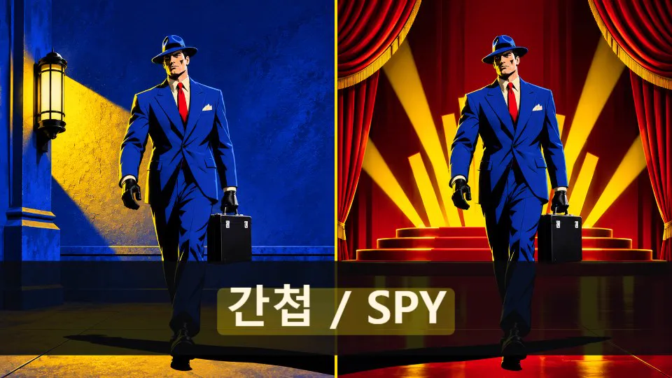
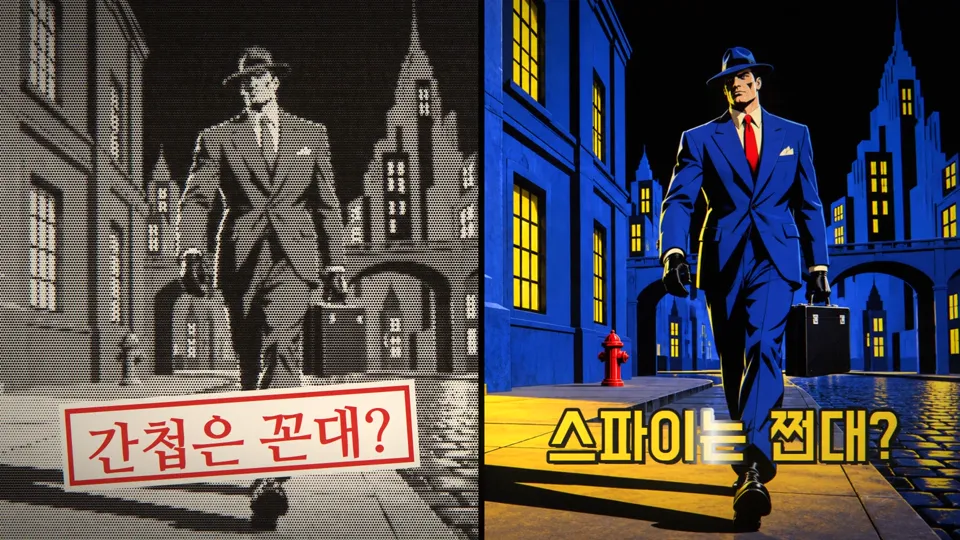

그림은 그대로, 이름표만 바꾼다
처음 뮤직비디오는 코덱스가 만들었습니다. 그림은 좋았지만 영상은 박자에서 어긋났고, 오래 멈춰 있었습니다. "이번엔 제대로 하자"는 말에, 그림은 그대로 이어 쓰고 움직임과 장치를 처음부터 다시 짰습니다.
코덱스판에서 본 것
원색과 검은 잉크의 만화 누아르 그림은 끝까지 일관됐습니다. 그래서 그림은 버리지 않았습니다. 대신 영상이 곡을 따라가지 못하는 곳이 보였습니다.
컷이 박에서 늦다화면이 크게 바뀌는 순간과 가장 가까운 박 사이가 가운데값 95ms였습니다. 50ms 안에 든 것은 70번 중 19번입니다.
오래 멈춘다227초 중 75초는 화면이 거의 움직이지 않았습니다.
둘이 같은 사람이 아니다간첩과 스파이를 반씩 나눈 그림은 두 인물을 따로 그려, 픽셀이 같지 않았습니다. 곡이 하는 말과 반대입니다.
메시지가 정한 장치
같은 사람이 같은 일을 하는데, 간첩이라 부르면 낡았다며 고개를 돌리고 스파이라 부르면 멋있다며 박수를 칩니다. 바뀌는 것은 이름과 자막뿐입니다.
그래서 그림을 바꾸지 않기로 했습니다. 같은 그림을 코드가 두 번 그립니다. 간첩판은 흑백 망점과 붉은 고무도장, 나눔명조입니다. 스파이판은 원색 그대로에 광택이 지나가는 영화 제목, 도현입니다. 답인 "그게 그거야"는 두 이름표가 음절 단위로 흩어졌다가 같은 라벨 테이프 글자로 맞춰지는 것입니다. 나눔고딕코딩입니다.
같은 픽셀을 두 번 처리하니, 화면 속 두 사람은 정말 같은 사람입니다.


곡을 악기별로 나누다
분리한 드럼, 베이스, 기타, 보컬의 세기입니다. 화면은 킥에 흔들리고, 베이스 줄은 베이스 소리에 떨고, 가사 글자는 보컬이 시작하는 순간에 놓입니다.
구간별 평균을 표로 보기
감독 메모
구상, 그림, 파일럿, 전곡의 각 단계에서 사람이 정했습니다.
-
그림 그대로 이어간다.
새 그림체를 제안하지 않고 코덱스 원화 14장을 그대로 썼습니다. 새로 그린 그림도 원화를 기준 그림으로 보내 카메라를 고정한 채 자세만 바꿨습니다.
-
핵심 6장면만 2~3장.
기립박수, 무시하는 관객, 봉투 교환, 무대 뒤 탈출, 베이스, 추격에 자세를 더 그렸습니다. 모두 14장을 그려 10장을 썼습니다. 추격의 반대 발 자세는 두 번 그려도 같은 발이 앞에 나와 뺐습니다. 베이스의 손가락 자세는 원화와 거의 같아 뺐습니다.
-
빼고 파일럿.
곡에서 가장 센 3:11–3:41을 먼저 만들었습니다. 프레임을 뽑아 보니 흑백 망점이 굵어 첩보원이 보이지 않았고, 제목의 광택이 글자 밖 그림에까지 흰 띠로 칠해졌습니다. 둘 다 고쳐 다시 렌더링했습니다.
-
웹페이지 형태는 왜 매번 똑같지?
처음 만든 공개 페이지는 앞 작품들과 같은 틀에 사진만 바꿔 끼운 것이었습니다. 지금 이 페이지는 곡의 장치를 그대로 합니다. 같은 내용을 간첩판에서는 조서로, 스파이판에서는 영화 포스터로 보여 주고, 위의 이름표를 누르면 바뀝니다.
-
가사 미리내맨, 음악 수노, 그림 미리내맨 지시로 AI가 만듬.
크레딧의 정본입니다. 영상 설명과 이 페이지가 이 세 줄을 씁니다.
달라진 숫자
| 항목 | 코덱스판 | 이번판 |
|---|---|---|
| 화면이 크게 바뀐 순간 | 70번 | 156번 |
| 그 순간과 가까운 박 사이(가운데값) | 95ms | 20ms |
| 박에서 50ms 안에 든 것 | 19번 | 135번 |
| 거의 멈춘 초 | 227초 중 75초 | 227초 중 11초 |
두 영상을 같은 방법으로 쟀습니다. 흑백 160×90, 초당 24프레임으로 줄여 프레임 사이 밝기 차이를 보고, 크게 튄 순간을 화면이 바뀐 순간으로 셌습니다. 이번판의 수에는 컷뿐 아니라 이름표와 망점이 바뀌는 순간도 들어 있습니다. 박은 분당 150박을 기계로 추정한 격자이고, 1/24초 간격으로 쟀으니 20ms 아래는 가려내지 못합니다. 거의 멈춘 초는 1초 동안의 평균 차이가 0.6 아래인 초입니다.
아직 못 한 것
- 박자와 가사 시각은 기계로 쟀습니다. 2절, 브리지, 빌드는 줄 경계가 소리에서 분명히 갈리지 않아 마디 단위로 추정했습니다.
- 사람은 자세 그림 수만큼만 움직입니다. 걷고 뛰는 연속 동작은 없습니다.
- 베이스 줄의 떨림은 원화에서 눈으로 잰 위치에 그렸습니다. 실제 줄과 몇 픽셀 어긋날 수 있습니다.
- 이 페이지의 장면 사진에는 깊이 맵이 없습니다. 장면이 바뀔 때 입체감 없이 평면으로 넘어갑니다.
쓴 것
- 가사
- 미리내맨
- 음악
- Suno
- 그림
- 미리내맨의 지시로 AI가 만듦. 원화 14장은 코덱스판, 자세 10장은 OpenAI gpt-image-2.6-flare
- 재구성·코드
- Claude Code · Canvas 2D, WebGL2
- 곡 분석
- Demucs 악기 분리, 보컬 세기로 가사 시각 측정
- 글꼴
- 나눔명조, 도현, 나눔고딕코딩 (SIL Open Font License)